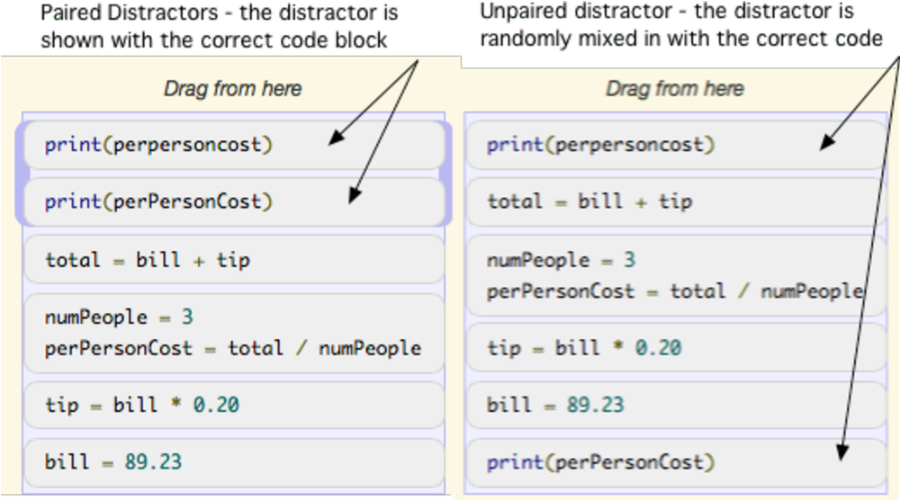

What are we trying to do?
Give a struggling novice programmer a practice problem that fits the way they are already trying to solve the task.
How is it done today, and what are the limits?
Parsons problems are more engaging than writing code from scratch, impose less cognitive load, and may be as effective for learning. They are usually one fixed puzzle per exercise, built from a single reference solution.
- One solution for everyone. In student data, a problem that students handled well as a write-code exercise proved hard as a Parsons problem.
- Approach mismatch. Our hypothesis was that the Parsons solution used an approach most students would not have taken, so a student had to abandon their plan before they could start.

What is new, and why should it work?
Recommend from many solutions, not one: group students' approaches, build Parsons problems from correct solutions in each group, and match a struggling student to the group their code resembles.
- Analysis. I separated students who did the Parsons version first from those who wrote code first, compared their performance, tracked which distractors they chose, and hand-classified common mistakes and approaches.
- Pipeline. I wrote tooling that extracted every attempt from the log files, ran it against test cases, sorted correct and incorrect solutions, and prepared the code for clustering as abstract syntax trees.
- Realistic distractors. Wrong blocks were written to mirror the mistakes we saw in the data.
Who cares, and what difference does it make?
Students get help that builds on their own thinking, instead of a puzzle that asks them to think like someone else.
- Novice programmers who get stuck on a problem.
- Instructors who want scalable, personalized practice for large courses.
- Computing education researchers studying how scaffolding should adapt to the learner.
What could go wrong?
- Risk
- Mitigation
- Clusters depend on the order the data was processed in
- Clustering repeated over 20 random orderings, with Rand and adjusted Rand index computed between every pair
- Log data is noisy
- Options to drop code that did not compile and to keep only each student's last incorrect attempt
- Distractors confuse rather than teach
- Distractors based on real, frequent mistakes
- Small study samples
- Think-aloud findings treated as preliminary
What does it take?
Existing course data, open-source tools and a small research team.
- Data. Logs of student submissions to Parsons and write-code problems.
- Software. Python and Jupyter notebooks.
- People. Two faculty mentors and student researchers, with IRB approval for the think-aloud studies.
How long does it take?
| When | Milestone |
|---|---|
| Oct 2020 | Joined the project. Analysis of Parsons and write-code submissions. |
| Then | Extraction, testing and clustering pipeline, with reproducibility checks. |
| Then | Think-aloud studies over Zoom with problems generated from the clusters. |
| Aug 2021 | Project concluded. |
How do we know it is working?
Midterm checks
- Clear performance differences between groups that explain where students struggle
- Clusters that agree across random orderings of the data
Final checks
- Students in think-aloud studies find the recommended problems helpful. In preliminary discussion, they reported a real benefit to their learning.